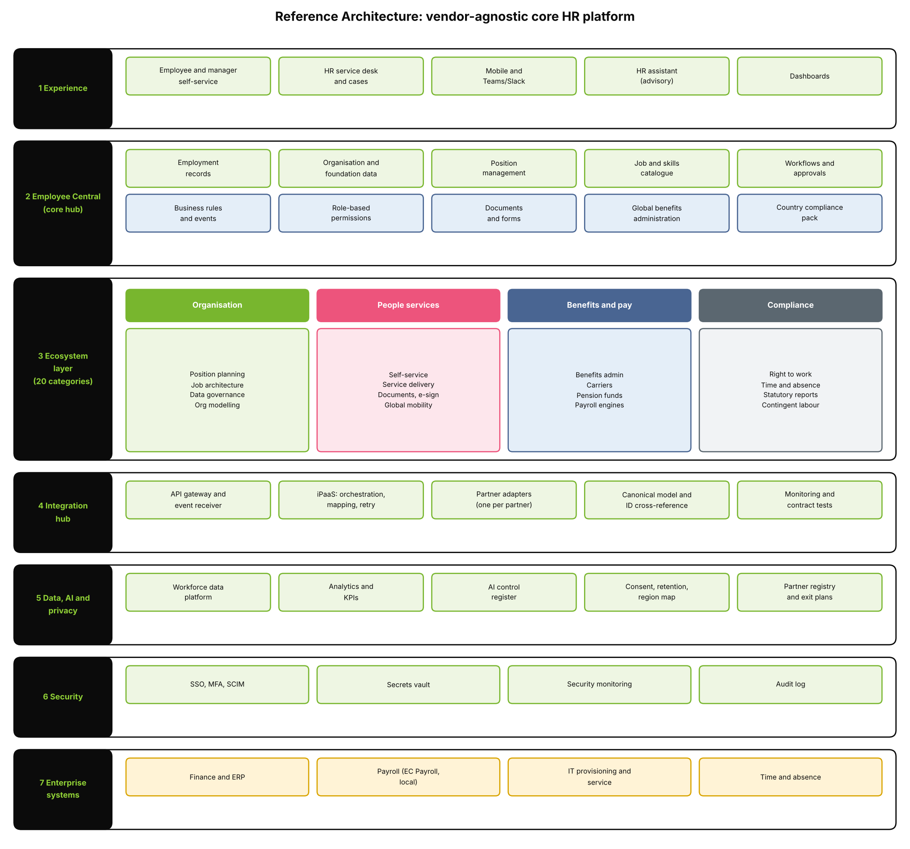

Application Architecture (Phase C)
On this page
In brief. Building blocks in layers. Each ecosystem category is reached through a capability interface and an adapter, so any vendor can be replaced.
12.1 Architecture at a glance

12.2 Vendor-agnostic method
Each component has an ABB (what it must do) and SBB options (examples only). A component lists responsibilities, not product features. Choosing an SBB is a selection decision recorded in the decision register.
12.3 Components
| ID | Component | Layer | ABB (what) | SBB options (examples only) | Key responsibilities |
|---|---|---|---|---|---|
| C01 | Employee and Manager Self-Service | Experience | Mobile-first portal for records, requests and approvals | Employee Central self-service; intranet portal; digital workplace suites | View and change own data, request documents, approve team changes |
| C02 | HR Service Desk and Cases | Experience | Case intake, routing, knowledge and service levels | HR case management tool; ITSM with HR module | Log, route, track and close employee requests with service levels |
| C03 | Mobile and Collaboration Channels | Experience | Tasks and approvals in chat and mobile | Mobile apps; Teams or Slack bots | Push approvals and tasks to where people work |
| C04 | HR Assistant (advisory) | Experience | Conversational answers from policy and own record | Enterprise assistant; chatbot platform | Answer policy and status questions; draft text; never change records |
| C05 | Employment Records | Core hub | One person, employment and assignment record | Employee Central employment information | Person, employment, job, pay and contingent worker data |
| C06 | Organisation and Foundation Data | Core hub | Legal entity, department, location, cost centre structure | Employee Central foundation objects | Organisation tree, codes, effective dating, country variants |
| C07 | Position Management | Core hub | Approved positions as the unit of headcount | Employee Central position management | Create, approve, change and close positions; position to person link |
| C08 | Job and Skills Catalogue | Core hub | Job families, roles, grades, skills | Employee Central job catalogue; skills library | Maintain job classification and mapping across countries |
| C09 | Workflows and Approvals | Core hub | Configurable approval routes | Employee Central workflow engine | Route changes by rule, delegate, escalate, audit |
| C10 | Business Rules and Events | Core hub | Rules, defaults and change events | Employee Central rules; event notifications | Derive values, validate input, emit events on change |
| C11 | Role-Based Permissions | Core hub | Role and target-population access | Employee Central role-based permissions | Least-privilege access by role, country and population |
| C12 | Documents and Forms | Core hub | Templates, generated letters, document store | Employee Central document generation; content services | Generate, store and retain employee documents |
| C13 | Global Benefits Administration | Core hub | Plans, eligibility and enrolment | Employee Central global benefits; benefits administration suites | Eligibility, enrolment, life events and carrier data |
| C14 | Country Compliance and Statutory Reporting | Core hub | Country fields, rules and statutory reports | Country packs; reporting tools | Country data models and statutory submissions |
| C15 | Insurance Carrier Connectivity | Ecosystem | Enrolment and change feeds to insurers | Carrier portals and file exchange; benefits networks | Send enrolments and receive confirmations by country |
| C16 | Pension and Fund Connectivity | Ecosystem | Pension and superannuation contributions and member data | Fund administrators; clearing houses | Member records and contribution data |
| C17 | Payroll Engine Connectivity | Ecosystem | Pay data hand-off and result feedback | Employee Central Payroll; local payroll engines | Send employee and pay data; reconcile results |
| C18 | Time and Absence Connectivity | Ecosystem | Time, shifts and absence exchange | Time and attendance suites; shift scheduling | Exchange schedules, absence and balances |
| C19 | Right-to-Work and Identity Verification | Ecosystem | Identity and work-eligibility checks | Identity verification services; government gateways | Order check, receive outcome and date, store outcome only |
| C20 | E-Signature | Ecosystem | Legally valid signature on documents | E-signature services | Sign contracts and acknowledgements; return evidence |
| C21 | Global Mobility and Relocation | Ecosystem | Assignments, tax and relocation support | Mobility management suites; relocation providers | Assignment records, allowances, host and home data |
| C22 | Contingent Workforce Management | Ecosystem | External worker records and onboarding | Vendor management systems; staffing platforms | Contingent worker identity, access and end dates |
| C23 | Position and Headcount Planning | Ecosystem | Headcount budget to position plan | Workforce planning suites | Plan headcount, scenarios and position creation |
| C24 | Recruiting Hire Hand-off | Ecosystem | Accepted offer to employee record | Recruiting suites; onboarding tools | Create the person and employment from an accepted offer |
| C25 | API Gateway and Event Receiver | Integration | Secured entry point for APIs and events | API management; event broker | Authenticate, throttle, log and route calls and events |
| C26 | Integration Hub (iPaaS) and Adapters | Integration | Orchestration, mapping, retry, one adapter per partner | Integration suites; iPaaS platforms | Run flows, map data, retry, dead-letter, reconcile |
| C27 | Canonical Model and ID Cross-Reference | Integration | One workforce model and ID map | Mapping service; reference data store | Map partner codes and IDs to the canonical model |
| C28 | Workforce Data Platform | Data | Governed store of workforce events | Cloud data platform; data lakehouse | Receive events, history, pseudonymised keys |
| C29 | Workforce Data Governance and Quality | Data | Owners, definitions, quality rules | Data quality tools; catalogue | Measure and fix quality; manage reference data |
| C30 | Analytics and KPIs | Data | Dashboards and headcount reporting | Analytics suites; people analytics | Headcount, cost, quality and service dashboards |
| C31 | Identity and Access Management | Security | SSO, MFA and provisioning | Enterprise identity provider; SCIM | Single sign-on, MFA and account lifecycle |
| C32 | Security Monitoring | Security | Detect misuse and attacks | SIEM; cloud security monitoring | Alert on unusual access, exports and integration errors |
| C33 | Consent, Retention and Region Map | Security | Lawful basis, retention and storage by country | Privacy management tools | Apply retention rules, deletions and region routing |
| C34 | Audit Log | Security | Immutable record of access and change | Log platform | Log reads of sensitive data, changes and exports |
| C35 | Finance and ERP Linkage | Enterprise | Cost centres, positions and cost postings | S/4HANA and other ERP | Receive cost centres; send position and headcount cost data |
| C36 | IT Provisioning and Service | Enterprise | Accounts, equipment and access for joiners, movers and leavers | Identity governance; ITSM | Create, change and remove access from record events |
| C37 | Responsible-AI Control Register | Data | Register and tests for every AI use | Governance platform; spreadsheet register | Purpose, data, tests and owner per AI use |
| C38 | Partner Registry and Exit Plans | Integration | Contracts, contacts, SLAs and exit plans | Vendor management tool | Track partners, reviews and exit tests |
| C39 | Integration Monitoring and Contract Tests | Integration | Health, volumes and contract tests | Monitoring tools; test automation | Alert on failures; run contract tests per release |
| C40 | Secrets Vault | Security | Store and rotate partner credentials | Key and secrets management | Hold scoped OAuth clients and certificates; rotate |
12.4 Interfaces
| ID | Interface | From | To | Direction | Mode | Frequency | Data | Classification |
|---|---|---|---|---|---|---|---|---|
| IF-01 | Hire hand-off: accepted offer to person and employment | Recruiting (C24) | Hub (C05) | In | API via C26 / event | On event | Person, contact, job, position, start date, pay hand-off fields | Restricted |
| IF-02 | Organisation, cost centre and location sync | Finance (C35) | Hub (C06) | In | API via C26 / scheduled | Hourly and on change | Cost centres, company codes, locations | Confidential |
| IF-03 | Position and cost-centre link to finance | Hub (C07) | Finance (C35) | Out | API via C26 | On change | Position, headcount, cost centre, status | Confidential |
| IF-04 | Headcount plan to positions | Workforce planning (C23) | Hub (C07) | In | API via C26 | On approval | Planned positions, budget, effective dates | Confidential |
| IF-05 | Job catalogue and skills sync | Skills source (C08) | Hub (C08) | In | API via C26 / scheduled | Daily | Job codes, families, grades, skills | Internal |
| IF-06 | Person and employment to payroll | Hub (C05) | Payroll engines (C17) | Out | API via C26 / file | Each cycle and on change | Person, employment, pay components, bank (masked) | Restricted |
| IF-07 | Payroll results and reconciliation | Payroll engines (C17) | Hub (C05) | In | API via C26 / file | Each cycle | Status, totals, exceptions | Confidential |
| IF-08 | Time and absence exchange | Hub (C05) | Time and absence (C18) | Both | API via C26 | Hourly | Schedules, absence, balances | Confidential |
| IF-09 | Benefit eligibility to carriers | Hub (C13) | Insurance carriers (C15) | Out | API via C26 / secure file | Daily and on life event | Enrolment, dependants (minimum fields), plan codes | Restricted |
| IF-10 | Carrier confirmation | Insurance carriers (C15) | Hub (C13) | In | Webhook / secure file | On event | Confirmation status, member number | Restricted |
| IF-11 | Pension and fund contributions | Hub (C13) | Funds (C16) | Out | Secure file / API | Each cycle | Member, contribution amounts and rates | Restricted |
| IF-12 | Right-to-work order | Hub (C05) | Verification (C19) | Out | API via C26 | On hire | Order, consent reference, document type | Restricted |
| IF-13 | Right-to-work result | Verification (C19) | Hub (C05) | In | Webhook via C25 | On event | Outcome and date only | Restricted |
| IF-14 | Document for signature | Hub (C12) | E-signature (C20) | Out | API via C26 | On event | Document, signers, template | Confidential |
| IF-15 | Signed document and evidence | E-signature (C20) | Hub (C12) | In | Webhook via C25 | On event | Signed file, evidence link, time | Confidential |
| IF-16 | Global assignment data | Hub (C05) | Mobility (C21) | Out | API via C26 | On change | Assignment, host and home, allowances | Restricted |
| IF-17 | Contingent worker records | Contingent system (C22) | Hub (C05) | In | API via C26 | On event and daily | Identity, supplier, dates, cost centre | Confidential |
| IF-18 | Statutory reports and submissions | Hub (C14) | Authorities / reporting (C14) | Out | Secure file / portal | Per statute | Statutory data sets by country | Restricted |
| IF-19 | Joiner, mover, leaver events to IT | Hub (C10) | IT provisioning (C36) | Out | Event via C25 | On event | Person key, role, dates, manager | Confidential |
| IF-20 | Account and email key back | IT provisioning (C36) | Hub (C05) | In | API via C26 | On event | User ID, work email | Internal |
| IF-21 | Staff sign-in and role groups | Identity provider (C31) | Hub (C11) | Both | SAML or OIDC / SCIM | Real time | Identity, groups | Internal |
| IF-22 | Employee events to data platform | Hub (C10) | Data platform (C28) | Out | Event stream via C26 | On event | Pseudonymised events, codes | Confidential |
| IF-23 | Dashboards and extracts | Data platform (C28) | Analytics (C30) | Out | Query | Daily | Aggregates; no direct identifiers | Confidential |
| IF-24 | Case to record lookup | Service desk (C02) | Hub (C05) | In | API via C26 | On demand | Role-limited record view | Confidential |
| IF-25 | Assistant retrieval | HR assistant (C04) | Policy and own record | In | API via C26 | On demand | Policy text; own record only | Confidential |
| IF-26 | Consent and retention instructions | Privacy manager (C33) | Hub and partners | Out | API via C26 | On event and daily | Deletion tasks, region flags | Restricted |
| IF-27 | Audit events | Hub and hub components | Audit log (C34) | Out | Event stream | Real time | Who, what, when, from where | Restricted |
| IF-28 | Partner health and contract-test results | Partners and adapters | Monitoring (C39) | In | Metrics | Continuous | Latency, errors, volumes | Internal |
| IF-29 | Credentials | Vault (C40) | Adapters (C26) | Out | Secrets API | On start and rotation | Scoped tokens and certificates | Restricted |
| IF-30 | Reference data and ID cross-reference | Canonical model (C27) | Adapters (C26) | Out | API | On change | Code maps, ID maps, versions | Internal |
12.5 Application to capability
Every component supports at least one capability in Chapter 10 and realises at least one requirement in Chapter 8.
12.6 Hub choice and roadmap note
Employee Central is the hub because it holds the global employee, organisation and position record and offers standard integrations to payroll, finance, benefits and the wider SuccessFactors suite. The architecture keeps the hub behind capability interfaces and a canonical workforce model, so product roadmap changes can be followed without redesign. Confirm module availability and country coverage with SAP at design time.